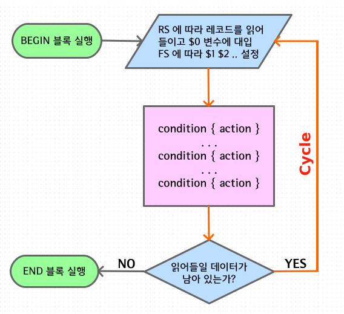

AWK basics
텍스트 데이터는 일정한 포멧을 가지고 있는 경우가 많습니다.
쉘에서 사용하는 ls -l, ps 같은 명령은
각 타이틀에 해당하는 값을 공백으로 분리된 컬럼으로 표시합니다.
프로그램이 생성하는 로그파일 같은 경우에도 어느 정도 규칙을 찾아볼 수 있고
지금 이렇게 글을 쓰는 것도 규칙이 없어 보이지만
띄어쓰기를 하고 문장이 종료되면 구두점을 찍는 규칙이 사용되고 있습니다.
awk 는 RECORD 와 FIELD 라는 개념을 이용해 입력 스트림으로부터 데이터를
자동으로 분리함으로써 특정 항목을 지정하고 추출하기 쉽게 해줍니다.
다음은 df 명령의 출력에서 네 번째 항목 값을 표시하는 것을 sed 와 awk 를 비교한 것인데요.
sed 의 경우 데이터 조작을 regexp 에 의존하기 때문에 awk 비해 직관적이지 못한 것을 알 수 있습니다.
$ df -h
Filesystem Size Used Avail Use% Mounted on
udev 7.8G 0 7.8G 0% /dev
tmpfs 1.6G 9.7M 1.6G 1% /run
...
$ df -h | sed -rn '2s/(\S+\s+){3}(\S+).*/\2/p'
7.8G
# NR==2 는 2번째 레코드를 $4 는 4번째 컬럼 값을 의미
$ df -h | awk 'NR==2{ print $4 }'
7.8G
숫자로 된 데이터를 처리할 경우 산술연산이 필요하거나 합계나 평균을 구해 출력해야 될 경우도 있는데요. awk 는 기본적으로 산술연산자와 수학 함수를 제공하므로 문제를 쉽게 해결할 수 있습니다. 특히 shell 에서 float 연산이 필요할 경우 awk 를 활용할 수 있습니다.
# 6번째 컬럼 값에 +5.2 을 해서 출력
$ awk '{ $6 += 5.2 }1' file
4050 S00001 31228 3286 0 22.1 23.6
4050 S00012 31227 4251 0 22.1 23.6
4049 S00001 28342 3021 1 24.4 47.8
awk 가 sed 와 다른 점은 sed 는 처리 단위가 라인이고 awk 는 레코드라는 점입니다. awk 는 레코드 구분자 (RS: Record Seperator) 와 필드 구분자 (FS: Field Sperator) 를 사용자가 직접 지정할 수가 있습니다. sed 는 RS 가 newline 으로 고정돼 있는 것과 같습니다. FS 는 당연히 없구요. 따라서 sed 는 매 명령 사이클마다 하나의 라인을 읽어 들이지만 awk 는 하나의 레코드가 여러 개의 라인으로 구성될 경우 한 번에 복수개 이상의 라인을 읽어들 수도 있습니다.
다음은 일반적인 awk 명령의 처리 과정을 나타내는데요 sed 와 크게 다르지 않은 걸 알 수 있습니다.
awk 는 입력 스트림으로부터 RS 에 따라 레코드를 읽어들여서 $0 변수에 대입하고
FS 에 따라 필드를 분리하여 각각 $1, $2, $3 ... 변수에 설정하는 과정이 추가됩니다.
또 한 가지 sed 에서 볼 수 없는 부분이 BEGIN, END 블록인데
이것은 입력 스트림과 관계없이 프로그램의 시작과 끝에 실행됩니다.

awk 스크립트 예제 )
$ cat file
이름 국어 산수 사회 자연 미술
AAA 88 76 97 78 35
BBB 77 56 28 43 55
CCC 90 65 53 80 65
$ awk '
BEGIN { printf "%6s %6s %6s %6s %6s %6s\n",
"", "국어", "산수", "사회", "자연", "미술" }
NR!=1 { a+=$2; b+=$3; c+=$4; d+=$5; e+=$6 }
END { NR--; printf "%5s %8.2f %8.2f %8.2f %8.2f %8.2f\n",
"평균", a/NR, b/NR, c/NR, d/NR, e/NR }
' file
국어 산수 사회 자연 미술
평균 85.00 65.67 59.33 67.00 51.67
awk 에서의 출력 방식
sed 의 경우 디폴트 출력 방식이 자동 출력 모드이지만 awk 는 다릅니다.
# sed 는 기본적으로 자동 출력 모드이다.
$ seq 3 | sed ''
1
2
3
# sed 는 '-n' 옵션을 통하여 출력 모드를 컨트롤할 수 있다.
$ seq 3 | sed -n ''
$
# awk 는 기본적으로 자동 출력 모드가 아니다.
$ seq 3 | awk ''
$
awk 는 sed 와 다르게 출력을 표현식의 참, 거짓 결과에 따라 합니다.
표현식이 참일 경우 $0 값이 출력됩니다.
# 숫자 0 은 거짓에 해당하므로 값이 표시되지 않습니다.
$ seq 5 | awk 0
$
# 0 이외의 숫자는 참이므로 값이 표시됩니다.
$ seq 5 | awk 1
1
2
3
4
5
# 표현식이 참이 되는 경우는 무엇이든 사용할 수 있습니다.
$ seq 5 | awk 'NR==3' # NR 은 현재 레코드 번호를 나타내는 builtin 변수
3
$ seq 5 | awk '$1 > 2'
3
4
5
$ seq 5 | awk '/2/'
2
# 따라서 다음과 같이 하면 print 문을 사용하지 않아도되어 식을 간단히 할 수 있습니다.
# '1' 은 사실상 '{print}' 와 같은 역할을 합니다.
$ seq 3 | awk '{ gsub(/.*/,"__&__") } 1'
__1__
__2__
__3__
참, 거짓의 판단
거짓인 경우
# 존재하지 않는 변수
$ awk 'BEGIN{ if (foo) { print 111 } }'
$
# null 스트링
$ awk 'BEGIN{ foo = ""; if (foo) { print 111 } }'
$
$ seq 3 | awk '""'
$
$ seq 3 | awk 'a = ""' # 대입연산
$
# 숫자 0
$ awk 'BEGIN{ if (0) { print 111 } }'
$
# 연산결과가 0
$ awk 'BEGIN{ v = 2; if (v - 2) { print 111 } }'
$
참 인 경우
# 0 이외의 숫자
$ awk 'BEGIN{ if (2) { print 111 } }'
111
$ awk 'BEGIN{ if (-1) { print 111 } }'
111
$ awk 'BEGIN{ if (0.00001) { print 111 } }'
111
# 임의의 스트링은 모두 참
$ awk 'BEGIN{ if ("abc") { print 111 } }'
111
$ awk 'BEGIN{ if ("0") { print 111 } }'
111
$ awk 'BEGIN{ if (" ") { print 111 } }'
111
$ seq 2 | awk '" "'
1
2
$ seq 2 | awk 'a = " "' # 대입연산
1
2
$ awk 'BEGINFILE{ if (ERRNO) { ... } }'
# regexp 매칭도 참
$ echo foobar | awk '{ if (/oba/) print 111 }'
111
공백 라인 삭제하기
# 공백 라인은 NF 가 0 이되므로 출력에서 제외된다.
$ awk 'NF' data.txt
system 함수를 이용해 외부 명령을 실행할 때는 함수에 전달된 명령이 sh -c 형태로 실행됩니다.
이때 한가지 주의해야 될 점은 명령 실행 결과가 shell 에서처럼 참일 경우 0 을 반환한다는 것입니다.
따라서 system 함수를 if 문에서 사용할 때는 다음과 같이 해야 합니다.
# 파일 'foo' 가 실행 파일인지 테스트
$ awk 'BEGIN { if (system("test -f foo -a -x foo") == 0) { ... } }'
Logical NOT
awk 에서 logical NOT 을 사용하는 방식은 프로그래밍 언어와 같으므로
!=, !~ 연산자를 사용하거나 표현식 앞에 ! 문자를 위치 시키면 됩니다.
$ seq 3 | awk 'NR == 2'
2
$ seq 3 | awk 'NR != 2'
1
3
$ seq 3 | awk '!(NR == 2)'
1
3
............................
$ seq 3 | awk '/2/'
2
# /2/ 는 $0 ~ /2/ 와 같으므로 !/2/ 는 결과적으로 !($0 ~ /2/) 와 같은 식입니다.
$ seq 3 | awk '!/2/'
1
3
$ seq 3 | awk '!($0 ~ /2/)'
1
3
$ seq 3 | awk '$0 !~ /2/'
1
3
............................
$ awk 'BEGIN { if (!val) print "null" }'
null
$ awk 'BEGIN { if (val == "") print "null" }'
null
$ awk 'BEGIN { if (!val != "") print "null" }'
null
$ awk 'BEGIN { if (!val == !"") print "null" }'
null
$ awk 'BEGIN { if !(val) print "null" }' # 오류
awk: cmd. line:1: BEGIN { if !(val) print "null" }
awk: cmd. line:1: ^ syntax error
. . .
Pattern range
sed 에서 사용되는 방식과 같이 awk 에서도 , (comma) 를 이용한 range 를 사용할 수 있습니다.
# 3 번째 라인부터 5 번째까지 프린트
$ seq 10 | awk 'NR == 3, NR == 5'
3
4
5
# 'AAA' 가 포함되는 라인부터, 'BBB' 가 포함되는 라인까지 프린트
$ awk '/AAA/,/BBB/' file
# 'AAA', 'BBB' 라인은 제외하고 프린트
$ awk '/AAA/,/BBB/ { if (!/AAA/ && !/BBB/) print }' file
$ awk '/BBB/{p=0}; p; /AAA/{p=1}' file
# 'AAA' 가 포함되는 라인부터, 공백 라인까지 프린트
# /^$/ 는 '^' 처음부터 '$' 끝까지 사이에 아무것도 없으니 공백 라인을 의미
$ awk '/AAA/,/^$/' file
# 'AAA' 가 포함되는 라인부터, 파일 끝까지 프린트 ( 0 은 끝까지 false 이므로 )
$ awk '/AAA/,0' file
# 첫번째 컬럼 값이 'AAA' 가 포함되는 라인부터, 두번째 컬럼 값이 'BBB' 가 포함되는 라인까지
$ awk '$1 ~ /AAA/, $2 ~ /BBB/' file
# 5번째 라인부터, 'BBB' 가 포함되는 라인까지
$ awk 'NR == 5, /BBB/' file
AND, OR
awk 에서는 기본적으로 &&, || 연산자를 제공합니다.
우선순위는 프로그래밍 언어에서처럼 && 가 || 보다 높은데
필요할 경우 ( ) 를 이용해 컨트롤할 수 있습니다.
$ cat file
111
222 foo
333
444
555
666
777
888 foo
999
..........................................
# (1~3 라인) 또는 (7 이상 라인 중에서 /foo/ 와 매칭 되는 라인)
# '&&' 가 우선순위가 높으므로 (NR < 4) || ((NR > 6) && /foo/) 와 같은 결과
$ awk '(NR < 4) || (NR > 6) && /foo/' file
111
222 foo
333
888 foo
# 1~3 라인 이거나 7 이상 라인 중에서 /foo/ 와 매칭 되는 라인
$ awk '((NR < 4) || (NR > 6)) && /foo/' file
222 foo
888 foo
print, printf
awk 는 출력에 print, printf 두 개의 프린트문 사용합니다.
print, printf 는 function 이 아니고 statement 입니다. 그러므로 ( ) 를 사용하지 않아도 됩니다.
double quotes 에서는 기본적으로 escape 문자가 처리됩니다.
printf 는 awk 에서 특별한 기능이 없습니다.
그냥 C 언어에서처럼 포멧에 따라서만 내용을 출력합니다.
https://www.gnu.org/software/gawk/manual/html_node/Format-Modifiers.html
$ cat file
Amelia 555-5553
Anthony 555-3412
Becky 555-7685
# printf 문은 포멧에 따라서만 출력하기 때문에 따로 newline 이 붙지 않습니다.
$ awk '{ printf "%-10s %s",$1, $2 }' file
Amelia 555-5553Anthony 555-3412Becky 555-7685
# 직접 newline 을 써줘야 합니다.
$ awk '{ printf "%-10s %s\n", $1, $2 }' file
Amelia 555-5553
Anthony 555-3412
Becky 555-7685
# 포멧 스트링 사용예
$ awk 'BEGIN { format = "%-10s %s\n"
printf format, "Name", "Phone"
printf format, "--------", "--------" }
{ printf format, $1, $2 }' file
Name Phone
-------- --------
Amelia 555-5553
Anthony 555-3412
Becky 555-7685
포멧 스트링을 생략해 사용할 수도 있습니다.
$ awk 'BEGIN { var = "bar"; printf "foo" var "\n" }'
foobar
dynamic width and precision
# '*' 문자를 이용해 width 와 precision 에 변수를 사용할 수 있는 기능입니다.
$ awk 'BEGIN{
width = 10
prec = 5
str = "abcdefg"
printf "%10.5s\n", str
printf "%" width "." prec "s\n", str
printf "%*.*s\n", width, prec, str
}'
abcde <---- 전체 width 는 10, 출력은 5 문자만 된다.
abcde
abcde
실제 awk 에서 특별히 사용되는 프린트문이 print 입니다.
print 문은 기본적으로 출력에 OFS( Output Field Seperator ) 와 ORS( Output Record Seperator ) 를 사용합니다.
print 문에 사용된 comma (,) 가 OFS 로 대체되고 마지막에 ORS 가 붙어서 출력되는 것입니다.
OFS 의 기본값은 space 이고 ORS 의 기본값은 newline 이므로 print 문으로 출력을 하면
printf 문과 달리 자동으로 끝에 newline 이 붙게됩니다.
print 문은 아무런 인수를 전달하지 않으면 기본적으로 $0 값을 출력합니다.
$ cat file
AAA,BBB,CCC
KKK,LLL,MMM
XXX,YYY,ZZZ
# print 문에 ',' 를 사용하지 않으면 OFS 값 적용이 되지 않습니다.
$ awk '{ print $1 $2 $3 }' FS=, file
AAABBBCCC
KKKLLLMMM
XXXYYYZZZ
# OFS 의 기본값은 space 입니다.
# ORS 의 기본값은 newline 이므로 매 출력시 마다 개행이 됩니다.
$ awk '{print $1, $2, $3}' FS=, file
AAA BBB CCC
KKK LLL MMM
XXX YYY ZZZ
# OFS 값을 ':' 문자로 설정할 경우
$ awk '{ print $1, $2, $3 }' FS=, OFS=: file
AAA:BBB:CCC
KKK:LLL:MMM
XXX:YYY:ZZZ
# ORS 값을 '@' 문자로 설정할 경우
$ awk '{ print $1, $2, $3 }' FS=, OFS=: ORS=@ file
AAA:BBB:CCC@KKK:LLL:MMM@XXX:YYY:ZZZ@
# print 문에 인수를 전달하지 않으면 기본적으로 $0 값이 출력됩니다.
$ awk '{ print }' file
AAA,BBB,CCC
KKK,LLL,MMM
XXX,YYY,ZZZ
데이터 파일을 엑셀 파일로 변환하기
$ cat file
Allen:Mona:70:77:85:83:70:89
Baker:John:85:92:78:94:88:91
Jones:Andrea:89:90:85:94:90:95
Smith:Jasper:84:88:80:92:84:82
Turner:Dunce:64:80:60:60:61:62
Wells:Ellis:90:98:89:96:96:92
$ awk '{print $1, $2, $3, $4, $5, $6, $7, $8}' FS=: OFS='\t' file
Allen Mona 70 77 85 83 70 89
Baker John 85 92 78 94 88 91
Jones Andrea 89 90 85 94 90 95
Smith Jasper 84 88 80 92 84 82
Turner Dunce 64 80 60 60 61 62
Wells Ellis 90 98 89 96 96 92
next
next 문은 현재 명령 사이클을 중단하고 다음 사이클을 시작합니다.
특정 위치에서 이후 코드 실행이 필요 없을 경우 사용할 수 있습니다.
# 읽어들인 레코드의 필드 개수가 4 개가 아닐 경우
# 에러 메시지를 출력하고 다음 레코드로 이동합니다.
NF != 4 {
printf("%s:%d: skipped: NF != 4\n", FILENAME, FNR) > "/dev/stderr"
next
}
다음과 같이 next 문을 활용하면 switch 문의 case, default 를 구성할 수 있습니다.
/foo/ { ... ; next } # switch 문의 case 에 해당
/bar/ { ... ; next }
{ ... } # switch 문의 default 에 해당
exit
awk 는 자체 구문 에러가 나서 종료될 경우에는 오류 종료 상태 값이 반환되지만
그 외 스크립트에서 외부 명령을 실행하거나 파일을 읽어들일 때 발생하는 오류에 대해서는 따로
오류 종료 상태 값이 반환되지 않습니다.
따라서 이와 같은 경우에도 오류 종료 상태 값이 반환되려면 직접 exit 명령을 사용해야 합니다.
exit 명령은 현재 위치에서 awk 프로그램 실행을 종료하는데 이때 만약에 END 블록이 있으면 실행됩니다.
$ awk 'BEGIN {
while ( getline < "xxx" > 0 ) print; # 'xxx' 는 현재 존재하지 않는 파일
if (ERRNO) { print ERRNO; exit 1 }
} END { print "END..." }'
No such file or directory
END... # exit 에의해 종료될때 END 블록도 실행된다.
$ echo $?
1
# return code 를 지정하지 않으면 기본값은 0 이다.
$ awk 'BEGIN{ exit }'; echo $?
0
Quiz
아래 데이터 파일의 4번째 컬럼 값에서 0x7f6cbc3a8fe0 값은 어떤 라인 사이에 위치할까요?
$ cat file
14 0x0000075d 20 0x7f6cbc1a875d 20 -r-- libfoo.so..rodata
15 0x00000774 36 0x7f6cbc1a8774 36 -r-- libfoo.so..eh_frame_hdr
16 0x00000798 124 0x7f6cbc1a8798 124 -r-- libfoo.so..eh_frame
17 0x00000df8 8 0x7f6cbc3a8df8 8 -rw- libfoo.so..init_array
18 0x00000e00 8 0x7f6cbc3a8e00 8 -rw- libfoo.so..fini_array
19 0x00000e08 448 0x7f6cbc3a8e08 448 -rw- libfoo.so..dynamic
20 0x00000fc8 56 0x7f6cbc3a8fc8 56 -rw- libfoo.so..got
21 0x00001000 32 0x7f6cbc3a9000 32 -rw- libfoo.so..got.plt
22 0x00001020 32 0x7f6cbc3a9020 32 -rw- libfoo.so..data
23 0x00001040 0 0x7f6cbc3a9040 8 -rw- libfoo.so..bss
# 0x7f6cbc3a8fe0 값은 libfoo.so..got 와 libfoo.so..got.plt 사이에 위치하는 것을 알 수 있습니다.
$ cat file | awk -v val='0x7f6cbc3a8fe0' '
strtonum($4) <= strtonum(val) { pre=$0; next } { exit }
END { print pre; print val; if ( pre != $0 ) print $0 }
'
20 0x00000fc8 56 0x7f6cbc3a8fc8 56 -rw- libfoo.so..got
0x7f6cbc3a8fe0
21 0x00001000 32 0x7f6cbc3a9000 32 -rw- libfoo.so..got.plt
# 다음과 같이 하면 val 값이 위 테이블에서 제일 큰값을 초과하는 경우
# 마지막 next 를 실행 후에 종료되므로 이전 라인이 표시되지 않습니다.
$ cat file | awk -v val='0x8f6cbc3a9040' '
strtonum($4) <= strtonum(val) { pre=$0; next }
{ print pre; print val; if ( pre != $0 ) print $0; exit }
'